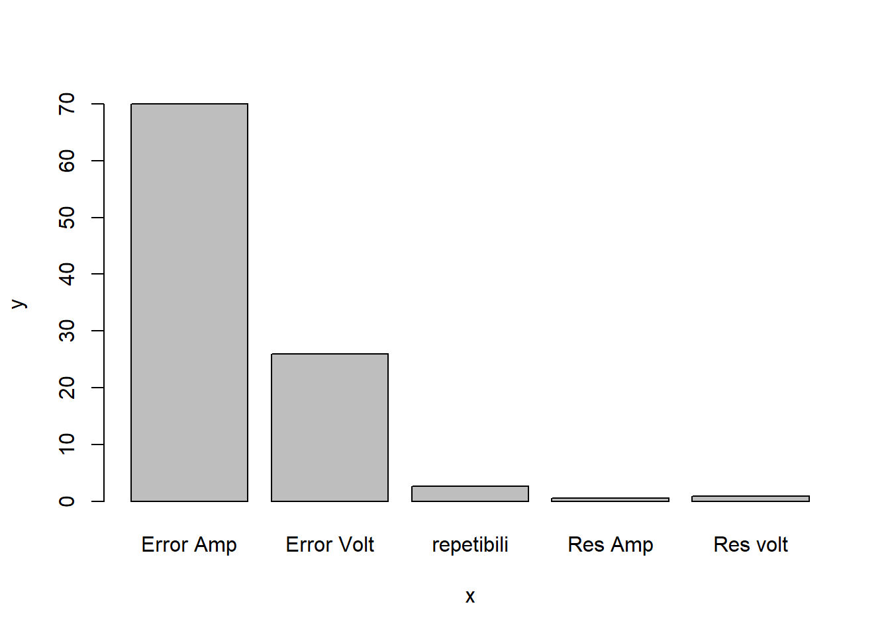

Métodologia para estimar la incertidumbre
Proceso para identificar y cuantificar la incertidumbre

1. Especificación del mensurando
EURACHEM DISPONE ASI
Expresión del mensurando
El mensurando puede expresarse matemáticamente de la siguiente manera:
\[X=f(x_1,x_2,..,x_n)\]
Donde:
X es el mensurando, es decir, el valor que se está midiendo o estimando.
\(x_1,x_2,...,x_n\) son las variables de entrada o las magnitudes medidas que contribuyen al valor de X.
f es una función matemática que describe la relación entre las variables de entrada y el mensurando. Esta función puede ser lineal o no lineal, dependiendo de la naturaleza de la medición.
La mayoría de los experimentos de medición tienen características que los aproximan fácilmente a una condición de normalidad, para que la distribución de probabilidad de un resultado de medición tienda al modelo normal se requiere:
Que la función que define al mensurando Y sea función lineal de otras magnitudes.
Que la distribución de probabilidad de las magnitudes que definen al mensurando Y sea del tipo normal o una aproximación a la distribución normal.
También se puede aceptar que la distribución de probabilidad de algunas magnitudes de definición sea rectangular sólo si éstas últimas son en número menor que las del tipo normal.
 Tomado de Llamosa et al (2011).
Tomado de Llamosa et al (2011).
2. Identificación de fuentes de incertidumbre
Las fuentes potenciales de incertidumbre se investigan y, siempre que sea posible, el método se ajusta para reducir la incertidumbre a un nivel aceptable.
El parámetro que mide la incertidumbre puede ser, una desviación estándar (o un múltiplo de ésta) o la semiamplitud de un intervalo, con un nivel de confianza determinado.
La incertidumbre de medida puede ser evaluada a partir de la distribución estadística de los resultados de series de mediciones, y pueden caracterizarse por sus desviaciones estándar experimentales.
El conocimiento de la incertidumbre implica un aumento de la confianza en la validez del resultado de una medición.
Cada una de las contribuciones separadas a la incertidumbre es un componente de la incertidumbre. Cuando se expresa como desviación estándar se conoce como incertidumbre estándar.
Si hay correlación entre las componentes, se tiene en cuenta mediante la covarianza.
Listar todas las posibles fuentes de incertidumbre, incluye:
De los parámetros,
De las suposiciones químicas.
Por las condiciones ambientales
Por la repitibilidad de las medidas
Por la exactitud y resolución del equipo
Muestreo: Variaciones aleatorias entre muestras.
Condiciones de almacenamiento
Efectos instrumentales
Pureza de reactivos
Estequiometría asumida
Condiciones de medida
Efectos de la muestra, computacionales
De redondeo
Efectos del operador y aleatorios
considerar los parámetros de la expresión del mensurando, ya que pueden tener una incertidumbre asociada.
El diagrama de causa y efecto es una forma muy práctica de listar las fuentes de incertidumbres, mostrando cómo se relacionan entre ellas e indicando su influencia sobre la incertidumbre del resultado. Ayuda a identificar efectos duplicados
Procedimientos para formar una lista estructurada
Principios del enfoque
La estrategia tiene dos fases:
Con un diagrama de causa-efecto se identifican efectos sobre un resultado.
Simplifique y resuelva duplicaciones. La lista inicial se depura para simplificar su presentación final y asegurar que los efectos no se han duplicado innecesariamente.
Análisis causa-efecto
El procedimiento empleado es el siguiente:
1. Escribir la ecuación completa para el resultado.
Los parámetros de la ecuación forman las ramas principales del diagrama.
2. Considerar cada etapa del método y añadir los factores necesarios al diagrama.
3. Para cada rama, añadir factores que contribuyen, hasta que sus efectos sobre la incertidumbre sean insignificantes.
4. Resolver las duplicaciones y repetir el proceso para clarificar las contribuciones
5. Agrupar las contribuciones para cada grupo. Es conveniente agrupar en esta fase los términos relacionados con la precisión en una rama independiente. Es común encontrar el mismo equipo usado como instrumento de pesaje, lo que puede llevar a considerar varias veces su incertidumbre de calibración. considerarla una sola vez.
Ejemplo 1: Determinación de la densidad del etanol
Considerar el caso de la determinación directa de la densidad de etanol d(EtOH) mediante la pesa de un volumen conocido V en un recipiente volumétrico adecuado de tara mtara y peso bruto incluido etanol mbruto. La densidad se calcula a partir de
\[d(EtOH)=\frac{(mbruto - mtara)}{V}\]

Para mayor claridad, solo se tienen en cuenta tres efectos:
la calibración del equipo,
la temperatura
la precisión de las medidas.
El diagrama causa-efecto asociado es:

Las ramas principales del resultado son los parámetros de la ecuación.
Cada rama tiene efectos contributivos adicionales, ya sean variables o constantes; las incertidumbres de estos efectos contribuyen claramente sobre la incertidumbre del resultado en este caso hay dos efectos ‘temperatura’, tres efectos ‘precisión’ y tres efectos ‘calibración’.
La figura D2 representa los efectos de precisión y temperatura agrupados
La temperatura puede ser tratada como un único efecto sobre la densidad, mientras que las variaciones individuales en cada determinación contribuyen a la variación observada en la replicación de todo el método.
El sesgo en la calibración de las dos pesadas se anula, y puede eliminarse (Figura D3)
Las ramas ‘calibración’ restantes deberían distinguirse como dos contribuciones (diferentes) debido a posible no linealidad en la respuesta de la balanza, junto con la incertidumbre de calibración asociada con la determinación volumétrica.

Ejemplo: Estudio de caso Determinación de la incertidumbre de método de análisis de aflatoxinas por HPLC en pasa uva (Martinez et al, 2018)
Las aflatoxinas son un tipo de toxinas producidas por ciertos hongos en cultivos agrícolas como el maíz, el maní o cacahuates, la semilla de algodón y los frutos secos (de cáscara dura como las nueces) (NIH,2024), esta sustancias es considerada como un carcinógeno natural más potente conocido hasta el momento.
La Cromatografía Líquida de Alta Eficiencia (HPLC, por sus siglas en inglés) es una técnica analítica que permite separar mezclas complejas de sustancias de procedencia diversa, con el propósito de identificarlas, cuantificarlas y purificarlas (UV,2024).
Determinar la concentración final de un analito en una matriz implica calcular una función, la cual depende de las variables de cálculo (por ejemplo, volumen de extracción, respuesta del equipo, etc.). Para el cálculo de la concentración para cualquier aflatoxina, se utiliza la siguiente ecuación:
\[Concentración \frac{u_g}{kg}=c_x=C_{HPLC}\frac{V_1*V_2}{v_3*M}*\frac{1}{R}\] Un análisis de aflatoxina implica determinar el valor de \(C_{HPLC}\), que es la respuesta del cromatógrafo.Todos los demás términos son constantes porque son mediciones establecidas con valor único.
Para el análisis de la incertidumbre se construyó un diagrama de causa y efecto, para determinar las fuentes de error y su incidencia en la incertidumbre.

Bibliografía
EURACHEM. (2011). Cuantificación de la Incertidumbre en medidas analíticas.
Martínez, N. D., Rodríguez, A. M., Gutiérrez, A. R., di Carlo Vitolino, M. D., & Durán, A. D. los Á. (2018). Determinación de la incertidumbre del método de análisis de aflatoxinas por HPLC en pasa de uva. Tecnura, 22(58), 25–36. https://doi.org/10.14483/22487638.12896
NIH. (2024). Aflatoxinas. https://www.cancer.gov/espanol/cancer/causas-prevencion/riesgo/sustancias/aflatoxinas/aflatoxinas
Universidad Veracruzana.(UV) (2024). Cromatografía Líquida de Alta Resolución (HPLC). https://www.uv.mx/sara/equipamiento/hplc/#:~:text=La%20Cromatograf%C3%ADa%20L%C3%ADquida%20de%20Alta,de%20identificarlas%2C%20cuantificarlas%20y%20purificarlas.
GUM JCGM 100:2008 Guía para la expresión de la incertidumbre de medición

Reglas generales para evaluar y expresar la incertidumbre de medición Aplicable en diversos campos de mediciones, incluyendo las necesarias para:
• Mantener el control y el aseguramiento de la calidad en producción
• Cumplir con leyes y reglamentos
• Apoyar I+D aplicados en ciencia e ingeniería
• Calibrar patrones, equipos y realizar ensayos para demostrar trazabilidad
• Desarrollar, mantener y comparar patrones físicos y materiales de referencia
La GUM cuenta con dos complementos para su aplicación,
Evaluación de datos de medición —Suplemento 1 de la “Guía para la expresión de la incertidumbre de medida”— Propagación de distribuciones aplicando el método de Monte Carlo.
Evaluación de medición datos – Suplemento 2 del “Guía para la expresión deincertidumbre en la medición” – Ampliación a cualquier número de cantidades de salida
PASOS PARA LA ESTIMACIÓN DE INCERTIDUMBRE ISO-GUM


Ejemplo
Se ha efectuado la determinación del valor de una resistencia R, empleando el método del voltímetro y el amperímetro (en conexión corta),

Los instrumentos utilizados fueron dos multímetros marca Hewlett Packard, modelo HP974A, en sus funciones de voltímetro y amperímetro, respectivamente. Se realizaron 6 mediciones en similares condiciones, obteniéndose los siguientes pares de valores:
en los alcances de 50 V y 500 mA de corriente continua, respectivamente.
En primera aproximación, la expresión (1),
\[𝑌=𝑓(𝑋_1,𝑋_2,...,𝑋_𝑁)\] aplicada a este caso, sería:
\[𝑌=𝑓(𝑋_1,𝑋_2,...,𝑋_𝑁)=𝑓(𝑉_𝑚,𝐼_𝑚)=𝑅_𝑚=\frac{V_𝑚}{𝐼_𝑚}\]
Sin embargo, teniendo en cuenta el consumo del voltímetro para la conexión usada, se debería efectuar, al menos inicialmente, una corrección como la que sigue:
\[ 𝑌=𝑓(𝑋_1,𝑋_2,...,𝑋_𝑁)=𝑓(𝑉_𝑚,𝐼_𝑚,𝑅_𝑉)=𝑅_𝑚=\frac{𝑉𝑚}{𝐼_𝑚−\frac{𝑉_𝑚}{𝑅_𝑉}}\]
donde \(R_V\) corresponde a la resistencia interna del voltímetro con valor de 10 M𝛺. De la ecuación anterior, se puede obtener, para cada uno de los valores medidos, la estimación de salida y, a partir de las estimaciones de entrada \(x_1, x_2,…,x_N\).
| Medición Nº | 1 | 2 | 3 | 4 | 5 | 6 | prom | sd |
|---|---|---|---|---|---|---|---|---|
| \(Vm[V]\) | 12,615 | 12,610 | 12,614 | 12,612 | 12,615 | 12,613 | 12.613 | |
| \(Im[mA]\) | 237,21 | 237,20 | 237,18 | 237,22 | 237,20 | 237,21 | 237.203 | |
| \(R_m[\Omega]\) | 53,181 | 53,162 | 53,184 | 53,166 | 53,183 | 53,173 | 53.175 | 0.009 |
Pasos establecidos según GUM
- Definir mensurando \[ 𝑌=𝑓(𝑉_𝑚,𝐼_𝑚,𝑅_𝑉)\]
- Modelo físico matemático
\[𝑅_𝑚=\frac{𝑉_𝑚}{𝐼_𝑚−\frac{𝑉_𝑚}{𝑅_𝑉}}\]
- Identificar fuentes de incertidumbre

- Estimar las fuentes de de incertidumbre
Incertidumbre de resolución
\[u=\frac{rsln}{\sqrt {12}}\] Incertidumbre del error
A partir de las expresiones de los errores correspondientes a los instrumentos utilizados, y empleando el promedio de los valores medidos de tensión y corriente, se tiene:
Voltímetro \[𝐸_{𝑉_𝑚}= ± (0,05 \% \quad \bar V_𝑚 + 2 \quad 𝑑í𝑔\quad rsln )\]
\[𝐸_{𝑉_𝑚}= ± (0,05 \% \quad 12.613 + 0.002 )= ± 0,0083 𝑉\]
Amperímetro
\[𝐸_{𝐼_𝑚}= ± (0,3 \% \bar I_𝑚 + 2 \quad 𝑑í𝑔\quad rsln)\]
\[𝐸_{𝐼_𝑚}= ± (0,3 \%* 237.203 + 0.02)= ± 0,73 𝑚𝐴\] Las incertidumbres del error están dadas por
\[u_c=\frac{error}{\sqrt 3}\]
| fuente | subfuente | Tipo | Distribución | Medida | incertidumbre |
|---|---|---|---|---|---|
| Voltímetro | Resolución | B | Rectángular | rsln=0.001 V | 0.00029 V |
| Error | B | Rectángular | e=0.0083 V | 0.0048 V | |
| Amperímeto | Resolución | B | Rectángular | rsln=0.01 mA | 0.0029 mA |
| Error | B | Rectángular | e=0.73 mA | 0.42 mA | |
| Repetibilidad | Resistencia | A | t student | s=0.009 𝛺 | 0.00367 𝛺 |
- Estimar los coeficientes de sensibilidad
\[𝑅_𝑚=\frac{𝑉_𝑚}{𝐼_𝑚−\frac{𝑉_𝑚}{𝑅_𝑉}}\]
Usar la regla del cociente
\[\left(\frac{f}{g}\right)=\frac{f'g-g'f}{g^2}\]
\[\frac{\partial R}{\partial V_m}=\frac{I_m}{\left(I_m-\frac{V_m}{R_v}\right)^2 }=4.2159\frac{1}{A}\]
\[\frac{\partial R}{\partial I_m}=\frac{-V_m}{\left(I_m-\frac{V_m}{R_v}\right)^2 }=-224.18\frac{V}{A^2}\] Contribución a la incertidumbre
Evalua la contribución de cada variable a la incertidumbre total del proceso a través del índice de contribución de cada una de ellas; para establecer puntos críticos que pueden mejorarse para disminuir la incertidumbre del método.
\[Ind (\%)=\frac{c_i*u_i}{\sum_i(c_i*u_i)}\]
| fuente | subfuente | incertidumbre | coef de sens | \(c_i*u_i\) | \(Ind (\%)\) |
|---|---|---|---|---|---|
| Voltímetro | Resolución | 0.00029 V | \(4.2159\frac{1}{A}\) | 0.001223 V/A | 0.9 |
| Error | 0.0048 V | 0.034992 V/A | 26 | ||
| Amperímeto | Resolución | 0.0029 mA | \(-224.18\frac{V}{A^2}\) | 0.00065 V/A | 0.5 |
| Error | 0.42 mA | 0.094155 V/A | 70 | ||
| Repetibilidad | s=0.009 𝛺 | 0.00367 𝛺 | 1 | 0.00367 𝛺 | 2.6 |
| suma | 0.134698 𝛺 | 100 |
y=c(70,26,2.6,0.9,0.5)
x=c("Error Amp","Error Volt","repetibili","Res volt", "Res Amp")
barplot(y~x)
Agrupación de incertidumbres según el tipo
Dado que hay varias incertidumbres provienen de diferentes fuentes, se agrupan aquellas pertenecientes a la tipo B
\[u_B(R)=\sqrt {u^2_{v_m}(R)+u^2_{I_m}(R)}\] Es decir: \[u_B(R)=\sqrt {C^2_{V_m}[u^2(E_{v_m})+u^2(Res_{v_m})]+C^2_{I_m}[u^2(E_{I_m})+u^2(Res_{I_m})]}\]
Reemplazando: \[u_B(R)=\sqrt {4.2159^2[0.0048^2+0.00029^2]+224.18^2[0.00042^2+0.0000029^2]}=\pm 0.096 \]
Ahora se evalua la incertidumbre total, teniendo en cuenta aquellas provenientes tanto de las tipo A como las de tipo B
\[u(R)=\pm\sqrt {u^2_A(R)+u^2_B(R)}=\pm 0.096\] \[u(R)=\pm\sqrt {0.0038^2+0.096^2}=\pm 0.096\]
Grados de libertad
Determinar los grados de incertidumbre de cada uno de los parámetros
\[v_{eff}=\frac{u^4(R)}{\sum_{i=1}^N \frac{u_i^4(R)}{v_i}}=\frac{u^4(R)}{\frac{u_i^4(R)}{5}+\frac{u_i^4(R)}{\infty}+\frac{u_i^4(R)}{\infty}}\]
\[v_{eff}=\frac{(0.096 \Omega)^4}{\ \frac{(0.038\Omega)^4 }{5}}\geq 2.1*10^6\]
Para una cobertura del 95% con y gl infinitos se obtiene un factor de cobertura de 1.96
\[U=k*u(y)=1.96*0.096 \Omega=0.19 \Omega \] \[R=(53.18\pm 0.19)\Omega \]
Otro camino, incertidumbre dominante, bajo el teorema de límite central:
Criterio de la distribución dominante
\[\frac{u_r(y)}{u_1(y)}<0.3\] Donde \(u_r(y)\) es la contribución de las incertidumbres no dominantes, \(u_1(y)\) es la incertidumbre estándar de mayor valor siempre y cuando sea “no normal”
Aporte de las incertidumbres no dominantes
\[u_B(R)=\sqrt {0.00367^2+4.2159^2[0.0048^2+0.00029^2]+224.18^2[0.0029^2]}=\pm 0.65045 \]
Incertidumbre no dominante
\[\sqrt{224.18^2*[0.00042^2]}=4.5943\]
\[\frac{0.65045}{4.594322}=0.1415<0.3\] Bajo este criterio, y con un nc del 95%, se tiene que el factor de cobertura es
\[k=p*\sqrt 3=1.64\] \[U=k*u(y)=1.64*0.096 \Omega=0.15744 \Omega\]
\[R=(53.18\pm 0.16)\Omega \] Analisis comparativo de ambos resultados
| con Dist rectángular | Con Dist Normal | |
|---|---|---|
| gl efectivos | \(\infty\) | — |
| \(U_c\) | 0.096 | 0.096 |
| k | 1.64 | 1.96 |
| \(U_e\) | 0.15744 | 0.18816 |
Magnitudes dependientes o correlacionadas
Algunas situaciones llevan a considerar una correlación significativa entre dos magnitudes de entrada, como si se utiliza el mismo instrumento de medida, el mismo patrón o la misma referencia con incertidumbre típica significativa.
Dicha asociación entre variables es posible estimarla a través de la matriz de varianzas \(u^2(xi)\) y covarianzas \(u(x_i,x_j)=u(x_j,x_i)\).
\[\begin{bmatrix} u_1^2(xi) & u(x_1,x_2) & \cdots & u(x_1,x_n)\\ u(x_2,x_1) & u_2^2(x_2) & \cdots & u(x_2,x_n) \\ \vdots & \vdots & \ddots & \vdots \\ u(x_n,x_1) & u(x_n,x_2) & \cdots & u_n^2(x_n) \end{bmatrix}\]
Si dos estimaciones de entrada no están correlacionadas, su covarianza asociada y los elementos correspondientes \(u_{ij}\) y \(u_{ji}\) de la matriz varianza-covarianza son cero.
\[\begin{bmatrix} u_1^2(xi) & 0 & \cdots & 0\\ 0 & u_2^2(x_2) & \cdots & 0 \\ \vdots & \vdots & \ddots & \vdots \\ 0 & 0 & \cdots & u_n^2(x_n) \end{bmatrix}\]
El grado de correlación entre \(xi\) y \(x_j\) viene dado por el coeficiente de correlación estimado como
\[r(x_i,x_j)=\frac{u(x_i,x_j)}{u(x_i)u(x_j)}\] donde \(r(x_i,x_j)=r(x_j,x_i)\quad y \quad −1 ≤r(x_i,x_j)≤+1.\)
\(r(x_i,x_j) = 0\), significa que una variación en una de las dos no implica una variación en la otra.
La covarianza asociada a las estimaciones de dos magnitudes de entrada \(x_i\) y \(y_i\) puede considerarse igual a cero o ignorarse si no están correlacionadas, por ejemplo:
Si se miden de forma repetida pero no simultánea, en ensayos independientes y diferentes
Si las magnitudes resultantes de evaluaciones diferentes, hechas independientemente.
Si Una de las magnitudes puede ser tratada como constante
No se posee información suficiente como para evaluar la covarianza asociada a las estimaciones de Xi y Xj.
Incertidumbre combinada para variables correlacionadas
La evaluación de la incertidumbre de la medición cuando existe correlación entre fuentes de es una tarea difícil, especialmente cuando las cantidades tienen una distribucion de probabilidad diferente a la normal (Konopka, K,2007). En muchos casos se asume la normal, lo q puede causar errores en la estimación de incertidumbre.
La relación para estimar la incertidumbre combinada para variables correlacionadas, viene dada por la relación:
\[u_c^2(y)=\sum_{i=1}^N \sum_{j=1}^N \frac{\partial f }{\partial x_i}\frac{\partial f }{\partial x_j}u(x_i,x_j)=\sum_{i=1}^N\left[ \frac{\partial f }{\partial x_i} \right]^2 u^2(x_i)+2\sum_{i=1}^{N-1}\sum_{j=i+1}^N \frac{\partial f }{\partial x_i} \frac{\partial f }{\partial x_j} u(x_i,x_j)\]
Donde:
- f es la función del mensurando dada por:
\[Y=f(X_1,X_2,...,x_n)\]
Cada \(u(xi)\) es una incertidumbre típica, (Tipo A o Tipo B).
\(x_i\) y \(x_j\) son las estimaciones de \(X_i\) y \(X_j\).
El segundo término de la covarianza, puede escribirse en función de los coeficientes de correlación, más fácilmente interpretables que las covarianzas, como:
\[2\sum_{i=1}^{N-1}\sum_{j=i+1}^N \frac{\partial f }{\partial x_i} \frac{\partial f }{\partial x_j} u(x_i) u(x_j) r(x_i,x_j)\] La ecuación queda transformada en
\[u_c^2(y)=\sum_{i=1}^N\left[ \frac{\partial f }{\partial x_i} \right]^2 u^2(x_i)+2\sum_{i=1}^{N-1}\sum_{j=i+1}^N \frac{\partial f }{\partial x_i} \frac{\partial f }{\partial x_j} u(x_i) u(x_j) r(x_i,x_j)\] EJEMPLO
Retomando el ejercicio anterior.
Considerando el modelo físico matemático
\[𝑅_𝑚=\frac{𝑉_𝑚}{𝐼_𝑚−\frac{𝑉_𝑚}{𝑅_𝑉}}\]
considerando dependencia entre las variables, se tienen los coeficientes de sensibilidad obtenidos mediante las derivadas parciales de la función: \[c_1=\frac{\partial R}{\partial V_m}=\frac{I_m}{\left(I_m-\frac{V_m}{R_v}\right)^2 }=4.2159\frac{1}{A}\]
\[c_2=\frac{\partial R}{\partial I_m}=\frac{-V_m}{\left(I_m-\frac{V_m}{R_v}\right)^2 }=-224.18\frac{V}{A^2}\]
| fuente | subfuente | incertidumbre | coef de sens | \(c_i*u_i\) |
|---|---|---|---|---|
| Voltímetro | Resolución | 0.00029 V | \(4.2159\frac{1}{A}\) | 0.001223 V/A |
| Error | 0.0048 V | 0.034992 V/A | ||
| Amperímeto | Resolución | 0.0029 mA | \(-224.18\frac{V}{A^2}\) | 0.00065 V/A |
| Error | 0.42 mA | 0.094155 V/A | ||
| Repetibilidad | s=0.009 𝛺 | 0.00367 𝛺 | 1 | 0.00367 𝛺 |
| suma | 0.134698 𝛺 |
\[u_c^2(R)=\sum_{i=1}^Nc_i^2 u^2(x_i)+2\sum_{i=1}^{N-1}\sum_{j=i+1}^N c_i * c_j* u(x_i) u(x_j) r(x_i,x_j)\] \[\small{u_c^2(R)=\left[ \frac{I_m}{\left(I_m-\frac{V_m}{R_v}\right)^2}\right]^2 u^2(V) + \left[ \frac{-V_m}{\left(I_m-\frac{V_m}{R_v}\right)^2 } \right]^2 u^2(I) +2*\frac{I_m}{\left(I_m-\frac{V_m}{R_v}\right)^2}*\frac{-V_m}{\left(I_m-\frac{V_m}{R_v}\right)^2 } * u(V)* u(I)* r(V,I)\qquad(1)}\]
\[\small{u_c^2(R)= \frac{I_m^2}{\left(I_m-\frac{V_m}{R_v}\right)^4} u^2(V)\frac{V_m^4}{V_m^4} + \frac{V_m^2}{\left(I_m-\frac{V_m}{R_v}\right)^4 } \frac{V^2_m}{V^2_m} u^2(I) -2*\frac{I_m}{1}*\frac{V_m}{\left(I_m-\frac{V_m}{R_v}\right)^4 }*\frac{V_m^4}{V_m^4} * u(V)* u(I)* r(V,I)}\]
\[\small{u_c^2(R)= \frac{R^4*I_m^2}{V_m^2} * \frac{u^2(V)}{V_m^2} + R^4*\frac{1}{V_m^2 } u^2(I) -2*\frac{I_m}{1}*\frac{R^4}{1 }*\frac{1}{V_m^3} * u(V)* u(I)* r(V,I)}\]
\[\small{u_c^2(R)= \frac{R^2*R^2*I_m^2}{V_m^2} * \frac{u^2(V)}{V_m^2} + R^4*\frac{1}{I_m^2*R^2_m } u^2(I) -2*\frac{I_m}{1}*\frac{R^4}{V_m^2 }*\frac{u(V)}{V_m} *u(I)* r(V,I)}\]
\[\small{u_c^2(R)= \frac{R^2*V^2_m}{V_m^2} * \frac{u^2(V)}{V_m^2} + R^4*\frac{1}{I_m^2*R^2_m } u^2(I) -2*\frac{I_m}{1}*\frac{R^4}{I^2R^2 }*\frac{u(V)}{V_m} *u(I)* r(V,I)}\]
\[\small{u_c^2(R)= R^2*\frac{u^2(V)}{V_m^2} + R^2*\frac{u^2(I)}{I_m^2} -2*R^2*\frac{u(V)}{V_m} *\frac{u(I)}{I}* r(V,I)}\]
\[\small{\frac{u_c^2(R)}{R^2}=\frac{u^2(V)}{V_m^2} + \frac{u^2(I)}{I_m^2} -2*\frac{u(V)}{V_m} *\frac{u(I)}{I}* r(V,I)}\]
Reemplazando los valores en (1)
\[\small{u_c^2(y)= 4.2159^2*u(v)^2+224.18^2u(I)+ 2*4.2159*(-224.18)* u(V)*u(I)* r(V,I)}\]
\[\small{ u_c^2(y)= 4.2159^2[0.0048^2+0.00029^2]+224.18^2[0.00042^2+0.0000029^2]+ 2*4.2159*(-224.18)* 0.00509* 0.00332* (-0.176)}\]
\[\small{u_c^2(y)= 0.009276+2*4.2159*(-224.18)* 0.00509*(422.9*10^{-6})* (-0.176)}\] \[\small{u_c^2(y)= 0.009276+716.12*10^{-6}}=9.992*10^{-3}\]
\[\small{\sqrt{u_c^2(y)}=\sqrt{9.992*10^{-3}}}=\pm 0.0996\] Comparación
| Incertidumbre | |
|---|---|
| sin tener en cuenta la correlación | 0.096 |
| Con la correlación | 0.099 |
La GUM cuenta con dos documentos adicionales:
Evaluación de datos de medición —Suplemento 1 de la “Guía para la expresión de la incertidumbre de medida”— Propagación de distribuciones aplicando el método de Monte Carlo.
Evaluación de medición datos – Suplemento 2 del “Guía para la expresión deincertidumbre en la medición” – Ampliación a cualquier número de cantidades de salida
Hast ahora se han considerado modelos que consideran dos variables de entrada y una de salida., el suplemento 2 trata acerca de la estimación multivariada tanto de variables de entrada como de salida.
Bibliografía
GUM. (2008). Evaluación de datos de medición Guía para la Expresión de la Incertidumbre de Medida.
Konopka, K. (2007). Instrumentation and Measurement Technology Conference-IMTC 2007 Estimating Uncertainty of Correlated Quantities-Comparison of Two Methods.
Llamosa, L. E., Rivera, J. H., & Torres, J. I. (2011). Using The Central Limit Theorem In The Calculation Of Measurement Uncertainty. Revista Colombiana de Física, 43(3). https://doi.org/10.04.10.
EA-4/02. (2022). Evaluation of the uncertainty of measurement. http://www.european-accreditation.org